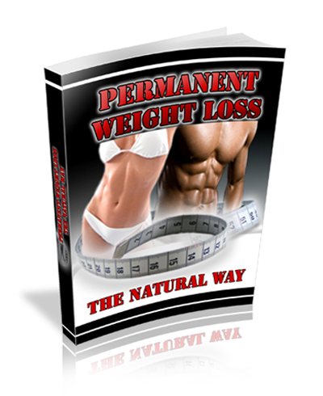

Have You Finally Lost Faith In Diet Pills,
Weight-Loss Books and “No Fat” Foods?
Quit
Trying To Keep Up With The Latest Trends
That Never Give You The
Results That You Deserve - Discover
How To Feed Your Body NATURALLY
And Give It What It Really Needs -- And
You
WILL Lose Weight!
Are you
fed-up with the supplements and the diet pills that never work?
Are you
tired of wasting money on those “Name Brand” diets that come and go
with each
year?
Are you tired of having to stick to these starvation diets to see any
REAL
results?
Well, if you answered “Yes!” to any of these questions then you need to
step
off the “dieter’s treadmill” and start feeding your body NATURALLY.
Feeding Your Body Naturally Is the Key to Weight
Loss
It's so
true...we tend to think that to lose weight we have to restrict
ourselves to
starvation crash diets portions however time and time again has proven
that
this method of weight loss does not work. In fact, if you would
like to
gain weight this is the perfect method to go about it. Studies
have shown
that such diets only make you fatter than you were before and damage
your body
in the process.
When you hear the phrase “feeding your body naturally” do you have
images of
high-priced foods, raw meals or tasteless tofu?
That’s
what I thought about when I heard about it… but really its nothing like
that.
Feeding your body naturally is all about giving your body what it needs
to
function at its absolute best.
And when your body is working at its top
performance… you will:
Instantly have
more energy
Be in the
best shape of your life
Feel younger,
healthier and more confident
Skyrocket
your metabolism
Process foods
faster
Look and feel
sexier
Burn fat the
RIGHT WAY
And most
importantly… you are going to lose weight and finally discover what
it’s like to KEEP IT OFF!
Quit Tricking Your Body Into Losing Weight And Start
Working WITH
It!
There is
one thing that all diet pills and fads have in common… they try and
“trick”
your body into losing weight and once you come off these types of diets
the
weight reappears almost instantly.
All these
diets tell you to have
this type of food, at this time, in this amount.
All these pills speed up your metabolism with chemicals.
They all try and convince your body to lose weight in an unnatural way…
and a
lot of times it actually works.
BUT
THE PROBLEM IS that these diets
are almost impossible to stick to…
It's crazy to
imagine that
someone can go their entire life without ever eating carbs… it’s nuts
to think
that you can take pills forever… it’s foolish to think that you will
always be
able to eat weird food combinations at all times.
But we
all go on these diets, hoping that we have actually found the magic
bullet that
is going to work forever.
We try
hard and we stick to these diets for as long as we can. Sometimes we
even lose
a few pounds… but then these unrealistic diets fail us and we gain it
all back.
It’s Really NOT
Your Fault
I want you to
understand that
it’s not your fault! Everywhere you look some “expert” or some
“doctor”
is telling you that this new diet is the guaranteed solution to all
your
problems.
With all this conflicting information it’s hard to tell the truth from
the
gimmicks.
So we have to just pick a diet and hope that it will work.
But not anymore…
Feed Your
Body NATURALLY And Lose Weight!
If you
really want to lose weight then you have to WORK WITH YOUR BODY and
stop trying
to “trick it” into shedding pounds.
It’s
really common sense if you think about it.
If you
give your body what it needs to run properly, then you are going to:
Feel
happy, healthy and skyrocket your metabolism!
Diminish
your cravings for sweets and high-calorie food!
Burn
fat at the fastest rate possible!
Look
AND feel younger!
Have
the energy you need to really live life not to just watch it
Greatly
improve your health and be there for your loved ones
Cut
down feelings of sadness and depression!
Have
a smart plan that you can ALWAYS stick to… without depriving yourself
or missing out on good-tasting food!
When you work
with you body and feed it naturally then you giving your
body
exactly what it needs to run at its optimal level… to burn calories
faster and
lose weight easier.
Think
about it, you want your car to run at its peak so you give it
high
octane, premium fuel. Your body is no different, it runs
better and
more efficiently when you feed it with the best it needs and cut the
garbage out
of your diet. This is why so many people don't have the energy
for living
these days because the high fat, empty calorie foods we eat
simply isn't
giving us the nutrition we need to get on with day to day
living.
The foods we eat are actually making us tired, lethargic, over fat and
unfit
and because we're not burning the excess calories we eat each day, we
are
actually getting fatter. In fact we are a nation of fast food
eaters and
as a result we are getting sicker than we ever were 50 years ago.
This generation of children being raised on high fat convenience foods
will
become the first generation in history to die before their parents from
Type II
diabetes, heart disease, high blood pressure and stroke. These
are
diseases that should be rare rather than a full blown epidemic -
frightening
isn't it?
But
it doesn't have to be like this -
you have the power to change it!
This
time - you are going to discover that you CAN lose weight with a
system
that you can stick to. You are going to discover that you CAN keep the
weight
off and you are going to discover that you CAN finally have the body of
your
dreams and live a long, healthy life.
I am going to help you make all this happen because you are going to be
armed
with all of the non hype information that will smash through all of the
myths
and garbage you've been force fed over the years. The
misinformation that
has robbed you from losing weight up until this point.
Not
anymore because today
you get all of the tools and resources that you need to make
lifechanging
decisions and to finally get the body and health of your dreams this
time with
my "Permanent Weight Loss The Natural Way" eBook.

All
The Tools You Will Ever Need To
Lose The Weight For
Good This Time – At Your Fingertips
When you
secure your copy of Permanent
Weight Loss The Natural Way
Here's
what you'll discover:
|
How you
gained the weight, unlocking this mystery will help you undo it
How to
control the factors keeping you fat even if it is genetic
10 signs to
spot a fad diet from a mile away
Why
extreme calorie restriction will
make only make you fatter
Why not all
fats are bad for you, in fact you need them
Eat more
to lose weight
Are you an
emotional eater?
Are you
obese or overweight?, what's
the difference?
What weight
you should be at and how
to calculate it
Which is
more important - Pounds or Inches?
Why you
should hide your weighing scales
How to
drop pounds based on solid, proven methods that work
How to turn
your metabolism into a fat burning machine
Exercises
that supercharge your body
into fat loss mode
...and lots,
lots more
|
|
|
Would
you really like to know how to
lose the weight and
keep if off this time?
With
Permanent
Weight Loss The Natural
Way – you
will finally have the tools
and resources you need to drop the weight for good this time.
Would you
like to enjoy life more? Imagine never again being held back from
the
things you've always wanted to do because your weight restricted you.
Imagine
feeling great about yourself both inside and out and having your
confidence
boosted to all time highs. Image turning heads and your friends
telling
you how great you look.
You
really can lose the weight for good, this can be the last program
you'll ever
do if you want it to. The power is in your hands, right now at
your
fingertips the answer lies right in front of you. Will you pass
it by and
risk being bigger a year from now than you are today?, or will you take
the
chance and be the weight you've always wanted to be. The decision
is
yours.
I understand
where you are. It's normal to have a healthy dose of
skepticism and so you should.
It's because
of this that I want to completely eliminate all of your
doubt and
put your mind at ease.
This is
why I have decided to offer you a money-back guarantee.
This Program Will Work For You Or You Get Your Money Back
If for any
reason you aren’t satisfied at all just send me an email
letting me
know and I will refund every last penny of your purchase.
Did I mention
that you also have a full 60 DAYS to make up your mind
too?! You get to give Permanent Weight Loss The
Natural Way a
really good going over for 2 WHOLE MONTHS before you
ever have to
make a decision, no catches.
You can't ask
for more than that.
Get
Started Right Now!
|
|
Special
Price
Save
$30.00
Not $77
Only
$47
|

Where
do you see yourself in 6 months from now? Slimmer,
healthier,
sexier?
If
you do, this is what you have been looking for, finally the answer
to your
questions and a plan that is going to help you shift the weight for
good this
time. You don't have to be overweight anymore, you get to make
that
choice.
So
would now be a good time to get the body you've always wanted?
The
reward for being slim far outweighs any desireful food you may be
addicted
to. When you are heading to your goal weight you get a completely
new
lease on life. Your confidence grows in leaps and bounds, your
self
esteem increases, you have the energy you were always looking for but
couldn't
squeeze out of your nutrient starved food you were eating. Your
body goes
back to being in balance the way nature designed and you greatly reduce
the
risk of those life threatening diseases such as stroke, Type II
diabetes, heart
disease and high blood pressure. You have so much to gain.
Permanent
Weight Loss The Natural Way is available
at your fingertips, ready to start
when you are. To change your life, all you have to do is click on
the
order button below to get your copy now, no matter what time of
day. You
can be reading this in as little as 3 minutes from now, it's that easy.
You can't
afford to miss this opportunity, so don't delay.
The only regret you'll have is not getting this program sooner.
P.S. Fad
diets which makes up most of them out there will only trick your body
for so
long with their gimmicky eating plans. Those plans will only ever
fail
you, you end up looking for the next great thing until you end up again
at the
same spot. Don't let that happen to you again, make this the last
program
you try because it can be, it's your choice.
P.S.S.
Remember, what else have you got to lose apart from the pounds?
With a
full 60 day trial, you risk nothing at all.
You will have in your hands all of the tools you need to finally lose
the
weight once and for all or you won't be out of pocket a single penny.
Grab your
copy of Permanent
Weight Loss The Natural Way RIGHT
NOW!